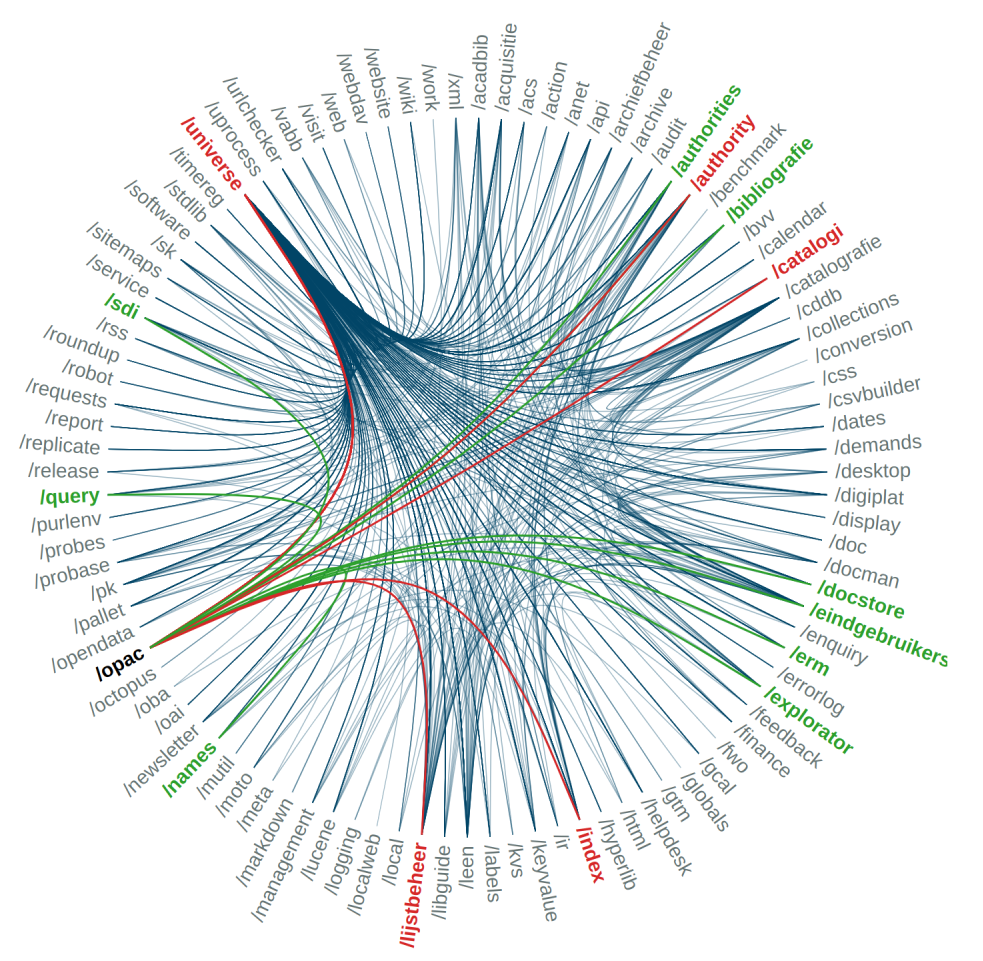

Chapter 9: Information Architecture¶

Brocade software visualization
In this chapter about the Brocade library management system (LMS) we will try to tie the previous chapters together. Above all, the aim is the illustrate the overall architecture of an information system, i.e. how different technologies come together to make up a system.
Brocade Library Services¶
(source: Wikipedia)
Brocade, in full “Brocade Library Services” is a web-based library information management system developed by the University of Antwerp (UAntwerp) in 1998 by a section of the University Library called Anet. Brocade is designed as a web-based application, sold via a cloud license model. The system is multilingual and uses open source components.
Brocade offers library and archival institutions a complete suite of applications allowing them to:
create, maintain and publish bibliographical, archival and documentary databases;
automate all back-office tasks in a library (cataloguing, authority control and thesaurus management, patron administration, circulation, ordering, subscription control, electronic resource management, interlibrary lending and document delivery) and an archival institution (ISAAR authorities, archival acquisitions, ISAD descriptions, descriptions of objects such as manuscripts, photos, letters, …)
offer electronic services to the library end-users (online public access catalogue, SMS services, personalized MyLib-environment, document requests, alerting service, self-renewal, …)
The networked topology of the application lets libraries work together, share information, share catalogues, while still keeping their own identity and independency when it comes to typical local functions such as acquisition and circulation.
Brocade is a completely web-based application, available anywhere, anyplace and anytime (where an internet connection is available) using standard browsers such as Firefox, Internet Explorer, Safari, Opera and Chrome. Brocade does not require installation of specific clients on the user’s desktop. Installation of software on local PCs is kept to a strict minimum: a PDF reader and an application called Localweb which caters for ticket printing and provides basic circulation operations when the network fails. As the Brocade server is hosted and managed centrally, software updates and system upgrades do not require interaction from the local library staff. Brocade uses a central software repository from which bug fixes can easily be installed overnight to all Brocade systems. All new releases are also installed centrally from this repository.
Target customers for Brocade are libraries (public libraries, academic and education libraries, special libraries), museums, documentation centres and archival organisations. The Brocade system has been implemented in various libraries in Belgium, The Netherlands and South Africa.
Server¶
It all starts with a server, a physical machine located in the University of Antwerp’s server farm. It currently runs Red Hat OS and uses Ansible for application deployment and configuration management. This means we do not manually install applications, but automate the installation process and describe it in detail in (.yaml) configuration files. This not only saves our system engineer a lot of time, it also ensures the consistency of the installation process (correct versions of software, dependencies, installation order, …)
The following components are key parts of our server infrastructure:
MUMPS¶
MUMPS (or “M”) is both a key-value database and an integrated programming language (which used to be quite common). How does that work? Well, MUMPS is an interpreted language, so you have an interpreter (same as in Python) at your disposal where you can do things like this:
s ^USERS(1,"first")="Tom"
s ^USERS(1,"last")="Deneire"
s ^USERS(1,"email")="tom.deneire@uantwerpen.be"
This instruction tells the database to define a global variable (the ^ caret sign makes it a global), which will be available both during the program’s runtime and which will be saved to an area of physical disk space designated for these globals, making it effectively a database.
The structure is that of a subscripted array, which is equivalent to this in JSON
{"USERS":
{
"1": {
"email": "tom.deneire@uantwerpen.be",
"first": "Tom",
"last": "Deneire"
}
}
}
Of course, you can also run code from files in MUMPS. These have extension .m and need to be installed in a designated r folder (e.g. library/mumps/brocade/r).
There are now, and have always been, several MUMPS implementations, one of which is G.TM. G.TM is now open source, which allows a company called YottaDB to distribute it and offer database support. For Brocade, YottaDB is our database provider, but technically our MUMPS platform and compiler is G.TM.
YottaDB also provide a C and Go wrapper, so you can access the MUMPS database without using MUMPS, if you want. You see, MUMPS is a language that, like all languages, has its flaws. On the other hand, MUMPS is simple, fast and powerful, and is codified in an ISO-standard which means that is allows for very stable code to build applications that can stand the test of time.
In any case, MUMPS is the heart of Brocade: the database that records all of our data and metadata. For instance, this is how book c:lvd:123456 which we used as an example in chapter05 is stored in our database, in global ^BCAT:
^BCAT("lvd",123456)="^UA-CST^53320,52220^tdeneire^65512,39826^^^"
^BCAT("lvd",123456,"au",1)="aut^0^oip^Sassen^Ferdinand^^nd"
^BCAT("lvd",123456,"co",1)="190 p.^^^^^oip^nd^normal^^^^^^^"
^BCAT("lvd",123456,"dr","paper")=""
^BCAT("lvd",123456,"ed",1)="oip^2 ed.^nd"
^BCAT("lvd",123456,"im",1)="Antwerpen^0^nd^YYYY^1932^^YYYY^^^pbl^0^Standaard^oip^nd^normal"
^BCAT("lvd",123456,"lg",1)="dut^dt"
^BCAT("lvd",123456,"lm","zebra")=""
^BCAT("lvd",123456,"nr",1)="co^0^1.248929^oip^nd^"
^BCAT("lvd",123456,"nr",2)="oclcwork^0^48674539^oip^^"
^BCAT("lvd",123456,"nr",3)="oclc^0^781576701^oip^nd^"
^BCAT("lvd",123456,"opac","cat.all","*")=""
^BCAT("lvd",123456,"opac","cat.anet","*")=""
^BCAT("lvd",123456,"opac","cat.ua","*")=""
^BCAT("lvd",123456,"pk","TPC")=""
^BCAT("lvd",123456,"pk","TPC","p:lvd:5554031")="^LZ 10/3/12^more-l^^^^^^^^^^^"
^BCAT("lvd",123456,"pk","UA-CST")=""
^BCAT("lvd",123456,"pk","UA-CST","p:lvd:205824")="^MAG-Coll 113.1/2^mag-o^^^^^^^0^^^^"
^BCAT("lvd",123456,"pk","UA-CST","p:lvd:205824","vo","-")=""
^BCAT("lvd",123456,"pk","UA-CST","p:lvd:205824","vo","-","o:lvd:261838")=""
^BCAT("lvd",123456,"pk","UA-CST","p:lvd:205825")="^FILO 19 A-SASS 32^filo-a^^^^^^^^^^^"
^BCAT("lvd",123456,"pk","UA-CST","p:lvd:205825","vo","-")=""
^BCAT("lvd",123456,"pk","UA-CST","p:lvd:205825","vo","-","o:lvd:261839")=""
^BCAT("lvd",123456,"re","lw")="1^1"
^BCAT("lvd",123456,"re","lw"," ","c:work:45740")=""
^BCAT("lvd",123456,"re","vnr")="1^1"
^BCAT("lvd",123456,"re","vnr"," 1932: 4","c:lvd:222144")=""
^BCAT("lvd",123456,"su","a::19:1")=""
^BCAT("lvd",123456,"su","a::93.001:1")=""
^BCAT("lvd",123456,"ti",1)="h^dut^1^0^oip^Geschiedenis van de wijsbegeerte der Grieken en Romeinen^^fp"
Apache and PHP¶
Our server uses Apache webserver to host a website with a URL that ends in ?brocade.phtml. This file is where we link up our frontend (HTML/Javascript/CSS) and backend (MUMPS/Python/Go).
The p in brocade.phtml stands for PHP, it is a HTML file which can also execute PHP code. PHP (unlike Javascript) runs server side which means it can access the server’s shell. The shell can then start a MUMPS that processes the input HTML (e.g. username and password), performs a database operation (e.g. lookup access rights in the database) and then produces output HTML over stdout. This is then read by PHP again to enable the server to render it on screen again.
Python¶
Our server also has a Python installation, including several (but well-chosen) third-party packages (such as pylucene). In Brocade, Python is used for many different things, but one of its main purposes is to run what we call toolcat applications.
Toolcat applications are typically pieces of specific backend software that offer support or extensions for other applications.
Some examples include:
mutil: maintenance of MUMPScrunch: storage monitoring (disk space, database regions, …)musqet: export of MUMPS data to.sqlitedocman: file storage, e.g. images, PDFs, …explorator: our Python wrapper (usingpylucene) for Lucene
So if a user uses Brocade to export a dataset in .sqlite, what happens under the hood is that MUMPS goes to the shell to trigger a musqet command. This is then executed with Python and the result is stored on the server with docman. The result is offered to the user as a download link.
Over the years, Anet has also developed Python packages that are able to read data from the MUMPS database or send data to it.
Other software¶
Other software installed on the server, includes Go (for systems programming, e.g. scheduling tasks such as cleaning /library/tmp) and Lucene for indexing.
Example¶
Example of going to OPAC, entering search, going to server, accessing Pylucene daemon, looking up search and connection to authority record, getting records associated with authority record, getting basic catalographic information of results, putting results in html with templating, returning result etc.
Production server¶
So far we’ve been speaking about ‘the’ server, but there are in fact several.
The one mentioned was actually the development server (we call it “presto”), as of course we don’t code on the production server (“moto”). If you mess that software up, all users are affected. (There are even more servers, e.g. a demonstration server, a storage server and - importantly - a replication server)
This works like this: we are currently developing Brocade version 5.20, whereas on the production server we have Brocade version 5.10 running, which we leave untouched. When we are finished with 5.20 and want to install the new release, we basically copy the new software (filepath library/software) from the development server to the production server, while leaving the data (e.g. the MUMPS database) intact (filepath library/database). If any additional operations need to be performed to get everything running, we write release software in Python and/or MUMPS.
Optional exercise: YDB Acculturation Workshop¶
If you want a taste of what it is like to set up your own information system, you can start by getting the YDB MUMPS engine running. After all, it is open source software, which you can download for free.
However, for a first acquaintance it’s probably better to take a look at the YottaDB Acculturation Workshop which the company has made available. This will guide you through setting up YDB in a virtual container and addressing the MUMPS database, either with MUMPS, C or Go (they are currently working on a Python wrapper).